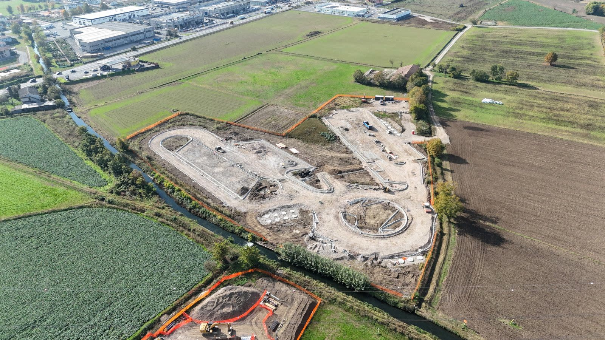
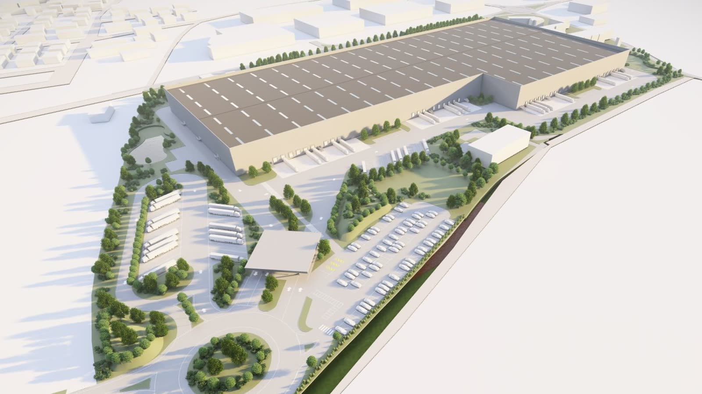

Residenza Viaduse, Gorle (BG) · Render animato
Trasformiamo aree in case, spazi commerciali, capannoni e campi fotovoltaici.
Redona Centro, Bergamo · Render animato
Commercio e industria
Parchi commerciali, uffici, capannoni e poli logistici, dal 1980 a oggi.
Vedi i progettiPolo logistico a Calcio (BG) · Render animato
I nostri campi fotovoltaici
Li costruiamo dal 2010. Quello di Torre Boldone è alla base della comunità energetica Imotorre.
Vedi gli impiantiCampo fotovoltaico di Torre Boldone (BG) · Foto dal drone animata
Sviluppo di aree
Cerchiamo e valutiamo l'area, otteniamo i permessi e costruiamo: dal terreno all'edificio finito.
Come lavoriamoL'area del polo logistico di Calcio (BG) · Foto dal drone animata
Prima e dopo
Un'area vera: com'era vista dal drone e come sarà nel progetto. Trascina la linea per confrontarle.


Rivolta d'Adda (CR)
Un'area di 110.000 mq che diventa un polo logistico, con 60.000 mq di superficie lorda di pavimento.
Prima · Foto dal drone del 05/11/2026, a lavori iniziati.
Dopo · Render del progetto.
I nostri progetti (42 progetti pubblicati: qui sei, in corso e recenti)
Sei progetti in corso e recenti.
Chi siamo
Birolini nasce dall'iniziativa di Vittorio Birolini. Dal 1979 sviluppa aree e costruisce edifici residenziali, commerciali e industriali.
Dal 2010 realizza anche impianti fotovoltaici, a tetto e a terra, in Italia e all'estero.
La nostra storiaZona industriale di Pedrengo (BG), progetto del 1980 · Foto
Birolini S.p.A., Via G. Marconi 123/C, 24020 Ranica (BG)